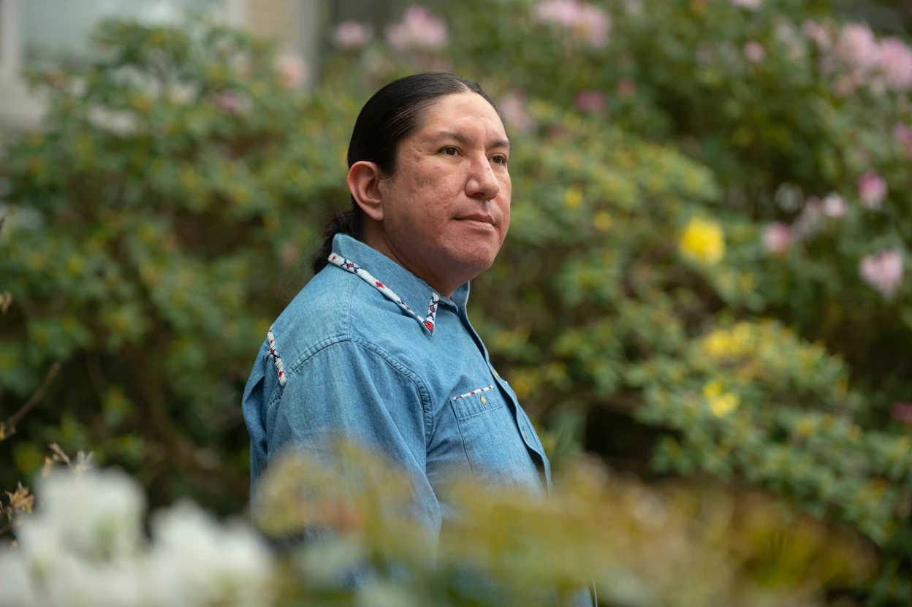

Tech Heroes

Michael Running Wolf
Michael Running Wolf is a Native American software engineer and AI researcher dedicated to using technology to preserve Indigenous languages. He is the founder of Indigenous in AI, a platform that elevates Indigenous voices in machine learning and AI research. Running Wolf has a Master's in Computer Science, is a former engineer for Amazon Alexa, former faculty at Northeastern University, and is pursuing a PhD in Computer Science at McGill University.
His work focuses on creating automatic speech recognition tools for Indigenous languages, inspired by projects like those preserving the Māori language. Through initiatives such as Buffalo Tongue and FLAIR (First Languages AI Reality), he develops AI and virtual-reality tools to reclaim threatened languages while ensuring Indigenous communities maintain ownership and control over their data.
"By elevating the voices of Indigenous ML researchers we will inspire future impactful work and break stereotypes." — Michael Running Wolf
Running Wolf challenges norms in tech by centering Indigenous perspectives in AI, showing that technology can be a tool for empowerment rather than erasure.
Phaedra Ellis-Lamkins
Phaedra Ellis-Lamkins is a Black social justice advocate and technology entrepreneur dedicated to using tech to serve low-income communities and communities of color. She is the co-founder and CEO of Promise, a California-based technology company that partners with government agencies and utilities to modernize payment systems, compliance monitoring, and public benefits access for underserved populations. Ellis-Lamkins graduated from California State University, Northridge, and began her career as a union organizer in San Jose fighting for home healthcare workers and low-income employees.
Before founding Promise, Ellis-Lamkins served as CEO of Green For All, an environmental justice nonprofit where she fought to ensure clean energy jobs and climate benefits reached disadvantaged and tribal communities. She also worked with the musician Prince, helping him reclaim ownership of his master recordings — a fight rooted in the same principles of ownership and equity that define her career. In 2017, she co-founded Promise, which went through Y Combinator's accelerator and raised venture capital from firms like First Round Capital and Jay-Z's Roc Nation. Promise offers interest-free, flexible digital payment plans and uses technology to connect people to benefits they already qualify for, eliminating burdensome paper applications that disproportionately harm low-income families.
"There aren't a lot of models of profitable, scalable companies building products for poor people without being exploitative or predatory. I founded Promise to change that." — Phaedra Ellis-Lamkins
Ellis-Lamkins challenges the implicit bias embedded in Silicon Valley — the assumption that profitable technology must serve wealthy consumers and that building for poor people means either charity or exploitation. Her work sits at the intersection of race, class, gender, and technology, proving that tech can be a tool for equity rather than a driver of inequality.